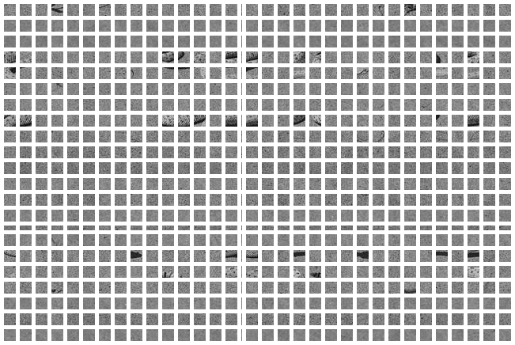
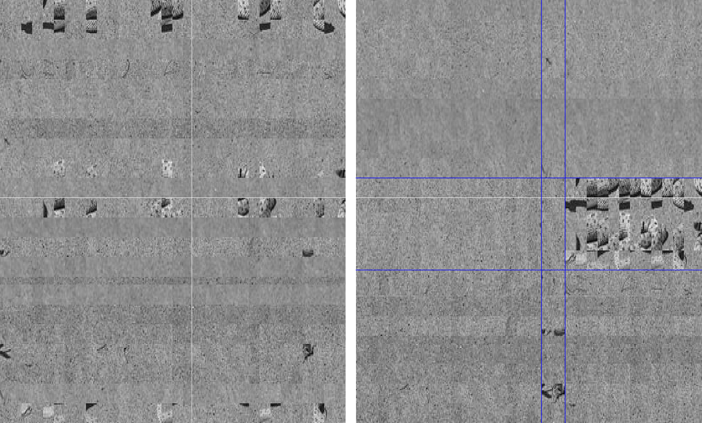
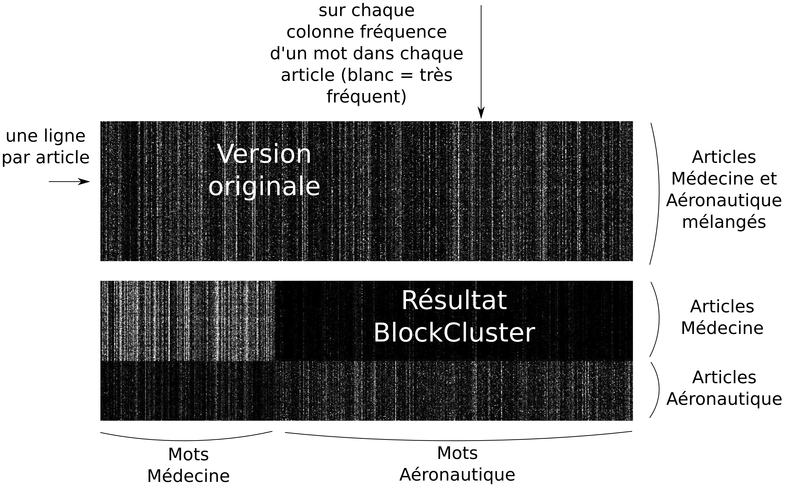

Introduction
Jeu: qu'est-ce que c'est ?

Introduction
- Regroupement par lignes
- Regroupement par colonnes
Le serpent est reconstitué par BlockCluster !
Explications
- BlockCluster ne connaît pas l'image initiale
- Les éléments dans l'image reconstituée peuvent ainsi être décalés
- Ce qui est important c'est le regroupement de zones similaires
- Utilisation de mathématiques pour résoudre le problème

Analyse de textes
- BlockCluster n'est pas limité au traitement d'images
- Il peut permettre de classer des livres par exemple
- Il faut dans un premier temps compter les fréquences des mots dans chaque livre
- Il faut ensuite mettre cette information sous la forme d'un tableau de données
- On peut enfin appliquer BlockCluster pour chercher des similitudes entre elles

Analyse de textes
- Deux groupes d'articles sont mélangés: médecine et histoire
- Dans le tableau initial on ne reconnaît pas les deux groupes
- BlockCluster réarrange les lignes et les colonnes pour faire apparaître les deux groupes
- On peut traiter beaucoups de documents, de façon automatique, et plus rapidement qu'à la main
